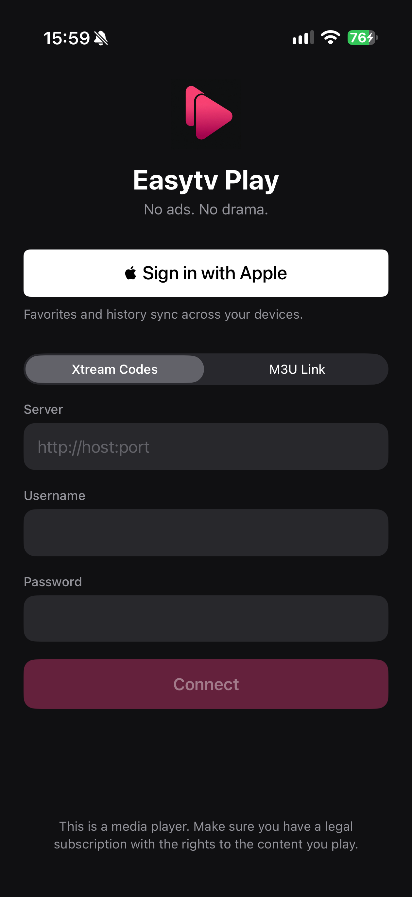

추가
Xtream Codes 로그인 또는 M3U / M3U8 링크 추가
Apple로 로그인하여 즐겨찾기와 시청 기록을 기기 간에 동기화

Xtream 목록, EPG, 광고 없음
M3U 플레이어
내 M3U 또는 Xtream Codes 재생목록을 위한 단순한 플레이어.
라이브 TV, 영화, 시리즈. 광고 없음.
즐겨찾기, 다운로드, 이어보기.
Easytv Play는 미디어 플레이어입니다. 채널, 구독, 콘텐츠는 제공하지 않습니다. 시청할 권한이 있는 소스만 추가하세요. EPG, 자막, 화질은 제공업체에 따라 달라집니다.
광고 없음. 서드파티 추적 없음.

내 재생목록
Easytv Play는 채널, 구독, 콘텐츠를 제공하지 않습니다. 사용할 권한이 있는 소스만 추가하세요.
즐겨찾기, 다운로드, EPG, 이어보기, 자막, Face ID 잠금, Apple로 로그인 동기화.
추가
Apple로 로그인하여 즐겨찾기와 시청 기록을 기기 간에 동기화

라이브
라이브러리에서 검색하고 즐겨찾기에 저장
가이드

이어보기

다운로드

채널, 구독, 콘텐츠는 제공하지 않습니다. 시청할 권한이 있는 소스만 추가하세요. EPG, 자막, 화질은 제공업체에 따라 달라집니다.
광고 없음. 서드파티 추적 없음.
화면


라이선스
이 앱은 다음 오픈 소스 구성 요소를 사용합니다.
© VideoLAN 및 VLCKit 작성자.
GNU Lesser General Public License 버전 2.1 이상(LGPL-2.1-or-later)에 따라 라이선스됩니다. 프레임워크는 동적으로 연결되며, 사용자는 LGPL에 따라 이를 교체할 수 있습니다.
Easytv Play는 내 M3U 또는 Xtream 재생목록을 위한 IPTV 플레이어입니다.
그 재생목록의 라이브 TV, 영화, 시리즈를 재생하고, 즐겨찾기, 다운로드, 이어보기를 제공합니다. 광고 없음. 서드파티 추적 없음.
채널, 구독, 콘텐츠는 제공하지 않습니다. 시청할 권한이 있는 소스만 추가하세요. EPG, 자막, 화질은 제공업체에 따라 달라집니다.
Easytv Play는 미디어 플레이어입니다. 채널, 구독, 콘텐츠는 제공하지 않습니다. 시청할 권한이 있는 소스만 추가하세요. EPG, 자막, 화질은 제공업체에 따라 달라집니다.
Xtream Codes 로그인 또는 M3U / M3U8 링크 추가
광고 없음. 서드파티 추적 없음.
Apple로 로그인하여 즐겨찾기와 시청 기록을 기기 간에 동기화. 자세한 내용은 개인정보 처리방침에 있습니다.
Easytv Play 지원. 문의: hello@soneraltin.com.